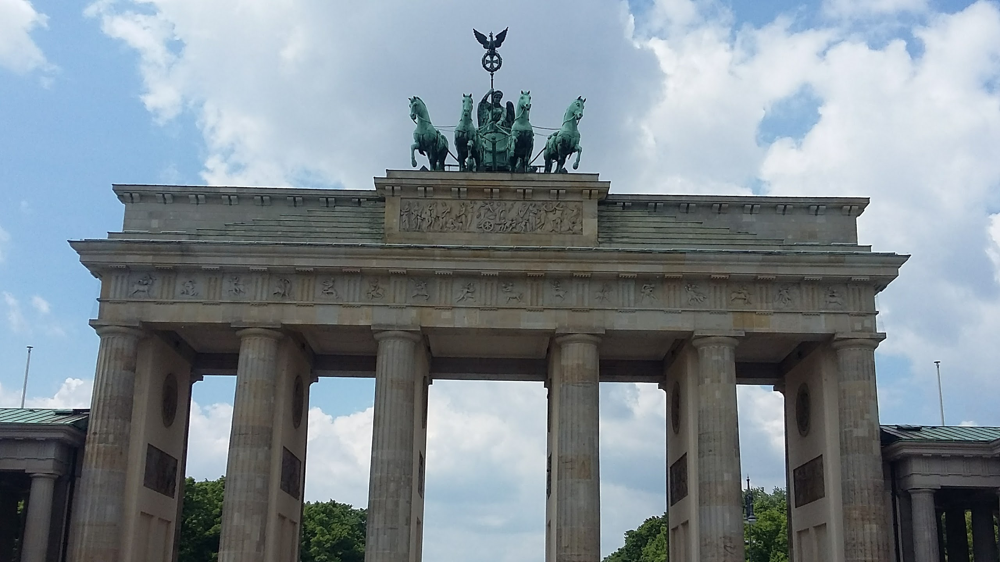
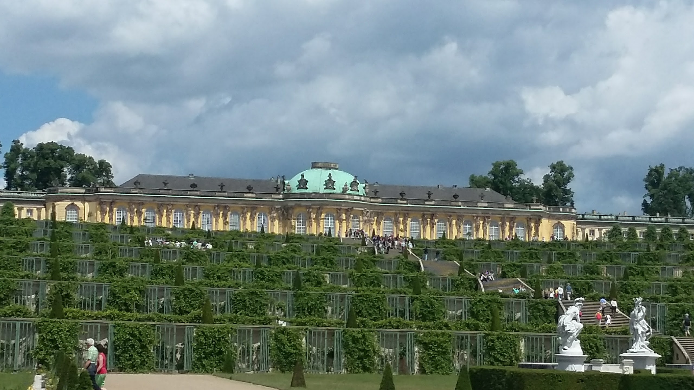

Germany
I visited Germany in 2017 as a school exchange program between my school, Euless Trinity High, and a school in Berlin, John F. Kennedy School. We stayed there for two weeks, each of us with a foster family. My foster family was supposed to be with one of the government people who sort of sponsored the trip but they had some issues, so I ended up in the home of a British national, a U.S. national, and their tri-citizenship son.
Berlin
Berlin was a lot of fun. We went swimming in a nearby lake, Schlachtensee, and visited a lot of awe-inspiring historical points, such as the Memorial to the Murdered Jews of Europe, a death camp, and the Berlin East Side Gallery, which is a section of the berlin wall that remains standing and is decorated by graffiti art. We also visited the Brandenburg Tor, which is a huge gate that used to be apart of an ancient city wall. An image of it is to the left.
Outskirts
We also took several trips outside of Berlin, such as to Dresden, to the Baltic Sea in the north, to a few bunkers, and even some old german palaces and castles. It was an amazing trip. Dresden was a beautiful city, with a amazing church that was rebuilt after it was destroyed in WW2, using a lot of the old stone. It was rainy the day we went to the Baltic Sea, but it was fun nonetheless. The bunker I saw was with my host family, not with the larger group. They were old nazi bunkers, some of them collapsed when the Russians tried to destroy them by pumping them full of water until they cracked. We went to a few palaces, one of which I have a picture attached to the right.